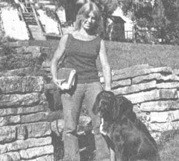
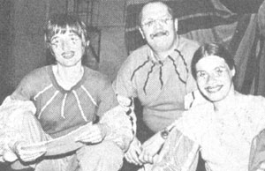
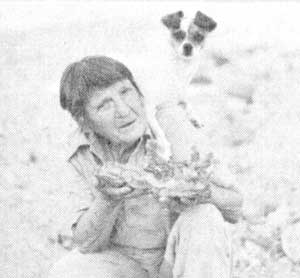
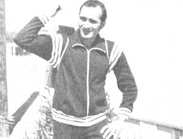

Profiles
Dr. Luann Arney, a pioneer veterinarian who deeply cares about her patients, is concerned about the waste of natural resources and actively farms; Mike Moynihan, Kren Kolberg and Barbara Leigh, They belong to the Friends Mime Theater and communicates a vital and potent message about ecology; Jeff Woodside, operates the Community Soap Factory, making traditional soap; Helen Madden, promotes collecting fire agate; Sal Garzino, collects aluminum cans while jogging.
By Dr. Luann Arney: Pioneer Vet
March/April 1979
Twenty-nine-year-old LuAnn Arney has been practicing veterinary medicine in the vicinity of Highlandville, Iowa since her graduation from veterinary school in 1973. Dr. Arney treats all varieties of animals . . . "but," she says, "horses are my specialty." Like most doctors, LuAnn is frequently called out in the middle of the night . . . sometimes in subzero weather. And often-especially in those cases where a pet is involved -the doctor finds she must "care for" an entire family ... in addition to the sick animal.
Once-for example-LuAnn was called in to help deliver a colt that was being born upside down. The mare was a family favorite . . . and all through the delivery the children of the household looked on and cried. Finally it was clear that the colt would not live, but-to the delight of the youngsters-LuAnn did save the mare.
"I can identity with the owners of the animals I treat," declares LuAnn, "because I've often been in their position myself." A vast assortment of creatures roam Dr. Arney's homestead grounds . . . some of them, of course, are under her professional care, but many are her own. "I love each and every one of them," LuAnn asserts, "but my team of mules-Emma, Mercy, and Libby-are the closest to my heart." The doctor hitches these beasts to her spring wagon to make calls on neighborhood patients. "I'd like to use the mules exclusively . . . to conserve gasoline," says LuAnn. "But when time is a factor, it isn't always feasible."
Dr. Arney is deeply concerned with today's waste of natural resources . . . and sorely wishes she could turn the clock back to the days before pollution and concrete overtook our lush, green land. "We must all get back to a simpler way of life," she says. And that's exactly what LuAnn has done ... in her home stead farmhouse complete with potbellied, wood-burning stove, outhouse, backyard water pump, and handmade furniture. (The farmstead chairs were hewn from sections of logs, and the kitchen table-which has served as an operating table on occasion-was constructed of heavy planks.)
Dr. Arney is also skilled in the art of tanning hides: She covers her pelts with a mixture of soap, salt, and the brains of the skinned animal, and then stretches the skins over wooden frames to dry. Some of the hides were acquired in LuAnn's college days . . . from folks who'd tried to make pets of wild animals and lost them to disease or accident. Other hides have been salvaged from animals killed by cars.
In addition, LuAnn raises her own meat and grows her own vegetables: "I eat whatever bounty the season provides," she says. A nearby trout stream keeps the doctor stocked with fish ... a flock of chickens supplies her with plenty of eggs and meat . . . and fresh, whole milk is provided by her own Jersey cow.
"My farmstead is a fine place to come home to after a hard day's work," says LuAnn. When she-often weary from a long day of work-opens her door, the lady vet is greeted by her coonhound Sam and a big, black Labrador retriever named Bear. "I live alone," LuAnn remarks, "but I'm certainly not lonely. After all ... I have my animals, and I have my work."- Maxine DeGarmo.
MIKE MOYNIHAN, KAREN KOLBERG, AND BARBARA LEIGH: FRIENDS MIME THEATER
The energy crisis is hilarious, and the state of American nutrition will leave you rolling in the aisle ... if you happen to be watching the Friends Mime Theater perform. It's a little like Barry Commoner, Amory Lovins, and Bucky Fuller playing clown-for-a-day . . . but when the laughter dies down, entertainers Mike Moynihan, Karen Kolberg, and Barbara Leigh have invariably communicated a vital and potent message.
The Milwaukee-based Friends Mime Theater (1248 N. 86th Street, Milwaukee, Wisconsin 53226) combines music, pantomime, giant puppets, and nonstop wit to spread the ecological word throughout the country. The group's two most popular productions are "Farewell to Farms" (or "Food Revued") and "Dr. Plutonium's Energy Circus". "Farms" is a satirical attack on the corporate nature of the American diet . . . featuring such characters as the Reverend Coca Cola and Twinkle the Perfect Hostess.
"Energy Circus" is a play with a moral message ... in which a poor pilgrim named Innocence searches for renewable energy in a circus made up of a Big Business Strongman, a Government Clown, and that fanatic proponent of nuclear energy, Dr. Plutonium.
The Friends Mime Theater follows a theatrical tradition that was prevalent in this country during the Great Depression: theater with a social commentary. "Society today," says Mike Moynihan, "encourages the arts to be socially irresponsible. Our group is reactionary in that we feel that such a cultural resource is much too valuable to be wasted on triviality."
So-with such nontheatrical influences as E.F. Schumacher, Barry Commoner, William Irwin Thompson, Wendell Berry, Ralph Nader, the New Alchemists, and Jesus as stimulation-Mike, Karen, and Barbara pooled their exceptional talents in 1974 and have since concentrated their efforts on community outreach. The group takes its productions to nursing homes, rural schools, factory lunchrooms, and correctional institutions. And-no matter how complex the issue-the Friends Mime Theater always manages to make its message both powerfully meaningful and downright entertaining!- Bill Hanley.
JEFF WOODSIDE: COMMUNITY SOAP FACTORY
Just a few generations back-before soap became that dyed, chemical-laden product we find on today's supermarket shelves-making washday liquids and cakes was a common household skill. Today, this tradition is being carried on by Jeff Woodside and his co-workers ... at the Community Soap Factory in Washington, D.C.
Though it took the 28-year-old former physics major several weeks of experimentation to come up with his own soap formula, Jeff asserts that soapmaking is a marvelously simple process: A fatty material (from either plant or animal) is mixed with an alkali . . . heated to produce a reaction called "saponification" . . . and voila! a source of suds.
The techniques used by the Community Soap Factory don't differ much from those methods employed in "days of yore" . . . save a few small modern modifications. The old-timers, for example, relied on a vat over a log fire to produce their soap. The Soap Factory, on the other hand, employs a 150-gallon, electrically heated stainless steel drum with a circulating pump. And coconut and olive oils have replaced animal fats in the Factory's list of ingredients.
Jeff's soap mixture consists of three parts coconut oil, three parts water, one part olive oil, and one part potassium hydroxide (an alkali). The brew is heated for 6-1/2 hours and cooled for 24 ... and the resulting product-an ecologically sound liquid soap-is drawn off into squirt-top bottles and marketed as "Just Plain Soap". Peppermint and almond versions are sold at slightly higher prices. "But," admits Jeff, "neither of the variations will get you a bit cleaner! . . . some folks are just willing to pay a few pennies more for the luxury of the fragrance."
For three years now, the Community Soap Factory has been operating out of a converted warehouse in a low-income section of Washington, D.C. (and it is Jeff's hope that enterprises such as his will someday help to revitalize the community). "We want to provide people-both within our city and around the country-with quality biodegradable soap products at the lowest possible price," says Jeff. And the Factory has been doing just that. . . with a booming business that involves the sale of 625 gallons of clothes-and-hand cleaner every month. Fifty percent of the product is distributed throughout the Washington area, but regular shipments are also made to New England, California, and Canada.
But things haven't always gone so smoothly for the Factory. Like many small-business proprietors, Jeff discovered-at the start of his enterprise-that "selling is the bottleneck". "It sometimes takes more money to promote a product than it does to produce it," says Jeff. "The nationally advertised brands had name recognition, while the Community Soap Factory-because of its limited budget-could publicize its wares only by mailing out flyers." As it happened, though, the solution to the Factory's woes came in the form of a rapidly expanding network of food coops. When Jeff began distributing his product through these outlets, he discovered that the price- and environment-conscious co-op shoppers were a natural market for the Factory's soap.
These days you'll still find the soap-maker spending his time pouring over chemistry books in the quest for additional product formulas . . . because, before long, Jeff hopes to be able to expand his factory's production to include a phosphate-free, biodegradable dish detergent and a shampoo made from natural ingredients. Business has been good for the Community Soap Factory . . . but Jeff Woodside isn't resting on his laurels just yet!- Michael Whitener.
HELEN MADDEN: A MOUNTAIN OF FIRE
Hey!" booms a raspy voice. "What the hell's the matter with you . . . get off your duff and pick up that stone behind you!" These words-accompanied on most occasions by the bark of a small terrier pup-have been spoken nearly every day for the past seven years by 57-year-old Helen Madden at her California Opal Hill Mine. Because if there's anything that enrages Helen (and therefore her canine. Goober II), it's a piece of the mine's precious commodity-fire agate-left lying on the ground instead of gracing someone's rock collection.
Fire agate is a unique gemstone that contains minerals which flash brilliant colors when caught by rays of sunlight . . . and it's Helen's conviction that anyone who sets foot on her mine is duty-bound to collect every piece in sight. But, though Helen often scolds to get her way, her prime concern is that all visitors leave Opal Hill satisfied. "I like to see people accumulate agate," says Helen. And she's willing to pitch in and lend a hand to see that they do ... whether by "hard-rock mining" (pounding the gem out of stone) or going through the "tailings" (pieces of rock found scattered on the ground). Helen can spot a piece of dirt-covered agate from more than 10 feet away . . . and she can dig up an astonishing amount of the gemstone, too.
Hard work isn't new to this twice-widowed grandmother of 12. During the Depression, Helen mined gold to help her family eke out a living . . . and she later spent 11 years as a sandblaster, nine years as a commercial fisherwoman, and two years as a diesel engineer. "I took jobs no one else would have . . ." says Helen, "not even the men."
Helen Madden has always liked people, and feels she can "read" them pretty well. "Although," she admits proudly, "Goober II is better than I am at that." Helen has a special empathy for the "old age pensioners" (as she calls the elderly) and is always particularly concerned that they enjoy their visit to her mine. Entrance fees are just enough to cover Helen's modest living expenses . . . and she flatly refuses to raise her prices. "Bull!" she replies to that suggestion. "Money is the root of all evil and there's too many money-hungry people in the world as is. Why should I gouge other folks? . . . the only thing I'll take with me when I go are my toenails, anyway!"
During the summer months Helen and Goober II travel along the west coast, exhibiting fire agate at rock shows and teaching fellow gem enthusiasts how to finish rough stones. But the two are really most content at home in their converted school bus, parked at the edge of Opal Hill Mine . . . which is accessible only via a 10-mile dirt and gravel road from Palo Verde. "I don't like being cooped up," says Helen. "That's why I'm happy up here . . . life is surely peaceful when you're close to the earth."- Sharyn Yanoshak Conkey.
SAL GARZINO: ALUMINUM JOGGER
Sal Garzino jogs for aluminum cans . . . and has been doing so for more than a year now. Every day he trots through the parking lots, side streets, shopping areas, and vacant lots of Tempe, Arizona . . . tossing every aluminum beverage can he can find into the cardboard box or canvas backpack that he carries strapped to his back.
Sal's prime reason for "aluminum jogging” is to help clean up the environment . . . but boredom with the routine of everyday running and his compulsion for practicality played a part in Sal's transformation as well. Everywhere he jogged Sal passed smashed or dented beverage cans . . . and it was obvious to him that they should be salvaged.
I save all the cans I collect," says Sal, "and sell them to a local recycling center for l7 cents a pound. On lazy days I just stroll along with a shopping cart and toss in discarded cans till it's full. . . but-when I 'aluminum jog'-I earn about $1.00 per hour with the more than 100 cans I'm able to collect in that time." In 1977 Sal grossed $155 in recyclable aluminum . . . and several times that amount in other valuable finds that he couldn't help but come upon while looking down. Since then, he no longer bids his friends farewell with the traditional "good-bye" . . . but departs, instead, with a heartfelt "Keep looking down."
Sal's aluminum jogging has brought him more than money, entertainment, and the satisfaction that he's helping to keep America beautiful ... it has afforded him superior physical conditioning as well. Sal has noticed a fuller development of his thigh and lower back muscles ... as each can he collects represents one more deep knee bend or a well-executed toe-touch motion.
Sal Garzino often propounds his own adage that "one man's drink is another man's can" . . . and with that he-offers his innovative sport to the more than 6,000,000 Americans who currently claim to jog. - Terri Garzino.
|
PHOTO BY THE AUTHOR |
 PHOTO BY THE AUTHOR |
 PHOTO BY THE AUTHOR |
 PHOTO BY THE AUTHOR |
 PHOTO BY THE AUTHOR |
 |